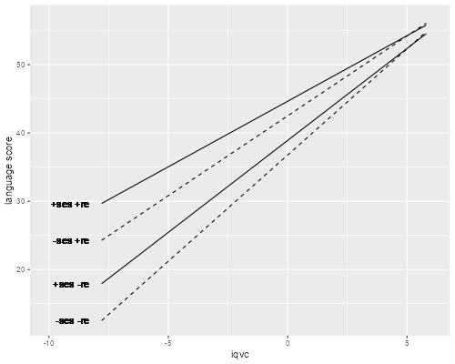

<h2 id="modeling-intercepts-and-slopes">Modeling Intercepts and
Slopes</h2>
<p>We conclude our analysis of the Snijders and Bosker data by letting
the intercept and slopes depend on a school-level predictor. Here are
the data one last time.</p>

{% include srtabs.html %}

<pre class='stata'>. use https://grodri.github.io/datasets/snijders, clear
(Scores in language test from Snijders and Bosker, 1999)

. quietly sum iq_verb

. gen iqvc = iq_verb - r(mean)
</pre>
<pre class='r'>> library(haven)
> library(dplyr)
> snijders &lt;- read_dta("https://grodri.github.io/datasets/snijders.dta") |>
+   mutate(iqvc = iq_verb - mean(iq_verb))
</pre>
<h3 id="a-level-2-predictor-school-ses">A Level-2 Predictor: School
SES</h3>
<p>A useful exploratory step is to plot the estimated intercept and
slope residuals obtained in the last model against potential predictors
at the school level. Here an obvious candidate is school SES. As usual
we will center this variable. We also store the school-level standard
deviation for later use.</p>
<pre class='stata'>. bysort schoolnr: gen first = _n==1

. sum schoolses if first // just one      

    Variable │        Obs        Mean    Std. dev.       Min        Max
─────────────┼─────────────────────────────────────────────────────────
   schoolses │        131    18.40458    4.433749         10         29

. gen sesc = schoolses - r(mean)

. scalar sesc_sd = r(sd)
</pre>
<pre class='r'>> ses &lt;- (group_by(snijders, schoolnr) |> slice(1))$schoolses
> school &lt;- data.frame(meanses = mean(ses), sdses = sd(ses))
> snijders &lt;- mutate(snijders, sesc = schoolses - school$meanses)   
</pre>
<p>We are now ready to fit the model. We specify all the fixed effects
first, including a cross-level interaction to let both the intercept and
slope depend on school-level SES. These are followed by the random
effects, which consist of the constant and the slope for verbal IQ:</p>
<pre class='stata'>. mixed langpost iqvc sesc c.iqvc#c.sesc || schoolnr: iqvc ///
> , mle covariance(unstructured)

Performing EM optimization ...

Performing gradient-based optimization: 
Iteration 0:   log likelihood = -7608.5763  
Iteration 1:   log likelihood = -7607.8425  
Iteration 2:   log likelihood = -7607.8383  
Iteration 3:   log likelihood = -7607.8383  

Computing standard errors ...

Mixed-effects ML regression                     Number of obs     =      2,287
Group variable: schoolnr                        Number of groups  =        131
                                                Obs per group:
                                                              min =          4
                                                              avg =       17.5
                                                              max =         35
                                                Wald chi2(3)      =    1059.58
Log likelihood = -7607.8383                     Prob > chi2       =     0.0000

──────────────┬────────────────────────────────────────────────────────────────
     langpost │ Coefficient  Std. err.      z    P>|z|     [95% conf. interval]
──────────────┼────────────────────────────────────────────────────────────────
         iqvc │   2.515011   .0789096    31.87   0.000     2.360351    2.669671
         sesc │   .2410466   .0658997     3.66   0.000     .1118856    .3702077
              │
c.iqvc#c.sesc │  -.0470625   .0174818    -2.69   0.007    -.0813263   -.0127988
              │
        _cons │   40.71326   .2910762   139.87   0.000     40.14276    41.28376
──────────────┴────────────────────────────────────────────────────────────────

─────────────────────────────┬────────────────────────────────────────────────
  Random-effects parameters  │   Estimate   Std. err.     [95% conf. interval]
─────────────────────────────┼────────────────────────────────────────────────
schoolnr: Unstructured       │
                   var(iqvc) │   .1489215   .0932377      .0436548    .5080227
                  var(_cons) │    8.22376   1.367463      5.936506    11.39226
             cov(iqvc,_cons) │  -.8862652   .2848344      -1.44453   -.3280001
─────────────────────────────┼────────────────────────────────────────────────
               var(Residual) │   41.51683   1.295675      39.05346    44.13558
─────────────────────────────┴────────────────────────────────────────────────
LR test vs. linear model: chi2(3) = 215.75                Prob > chi2 = 0.0000

Note: LR test is conservative and provided only for reference.
</pre>
<pre class='r'>> library(lme4)
> cli &lt;- lmer(langpost ~ iqvc*sesc + (1 + iqvc | schoolnr), 
+   data = snijders, REML = FALSE)
> cli
Linear mixed model fit by maximum likelihood  ['lmerMod']
Formula: langpost ~ iqvc * sesc + (1 + iqvc | schoolnr)
   Data: snijders
      AIC       BIC    logLik  deviance  df.resid 
15231.677 15277.557 -7607.838 15215.677      2279 
Random effects:
 Groups   Name        Std.Dev. Corr 
 schoolnr (Intercept) 2.868         
          iqvc        0.386    -0.80
 Residual             6.443         
Number of obs: 2287, groups:  schoolnr, 131
Fixed Effects:
(Intercept)         iqvc         sesc    iqvc:sesc  
   40.71327      2.51502      0.24105     -0.04706  
</pre>
<p>We find that the relationship between language scores and verbal IQ
varies substantially from school to school, depending on the school’s
SES and unobserved factors.</p>
<p>For the average school at mean SES, the mean language score for a
child with average verbal IQ is 40.71 and increases an average of 2.52
points per point (or 5.20 points per standard deviation) of verbal
IQ.</p>
<p>The expected score for an average kid increases 0.24 points per point
(or about one point per standard deviation) of school SES, but this
effect has a standard deviation across schools of 2.87 points, so there
remain substantial unobserved school effects.</p>
<p>The average gain in language scores per point of verbal IQ decreases
0.05 points per point (or about 0.2 points per standard deviation) of
school SES. This effect has a standard deviation of 0.39 across schools.
Comparatively speaking, SES explains a bigger share of the variation in
slopes than in intercepts.</p>
<p>Finally, we note that the random intercept and slope have a negative
correlation of -0.80. This means that schools than tend to show higher
language scores for average kids also tend to show smaller gains in
language scores per point of IQ.</p>
<h3 id="fitted-lines">Fitted Lines</h3>
<p>Next we will compute the predicted random effects and regression
lines and plot the results:</p>
<pre class='stata'>. predict yhat3, fitted

. sort schoolnr iqvc

. line yhat3 iqvc, connect(ascending) ///
>   title(Random Coefficient Model with SES) ///
>   xtitle(Verbal IQ (centered)) ytitle(Language Score)

. graph export fig1lang3.png, width(500) replace
file fig1lang3.png saved as PNG format
</pre>
<p></p>
<pre class='r'>> library(ggplot2)
> snijders &lt;- mutate(snijders, yhat3 = predict(cli))
> ggplot(group_by(snijders, schoolnr), aes(iqvc, yhat3, group=schoolnr)) + 
+   geom_line() + ggtitle("Random Coefficient Model with SES")
> ggsave("fig1lang3r.png", width = 500/72, height = 400/72, dpi = 72)
</pre>
<p></p>
<p>The figure looks pretty much the same as in the previous analysis. We
see that differences across schools in language scores are larger at low
verbal IQs and smaller at high verbal IQs. This is all done at observed
values of school SES. We could, of course, generate lines setting
centered school SES to zero, to see what the model implies for schoools
with average SES.</p>
<h3 id="plotting-scenarios">Plotting Scenarios</h3>
<p>A better way to compare the effects of school SES and unobserved
school characteristics is to plot the regression lines for 4 schools
which represent different scenarios. We set two to have school SES one
standard deviation above and one standard deviation below the mean. We
then combine these with school effects on the intercept and slope also
set one standard deviation above and below the mean.</p>
<p>Because of the high negative correlation between the slope and
intercept, it makes more sense to combine a positive intercept residual
with a negative slope residual, reflecting a “better” school where
scores are higher and less dependent on verbal IQ. The contrast is
provided by a negative intercept residual combined with a positive slope
residual, reflecting a “worse” school where scores are lower and more
dependent on verbal IQ.</p>
<p>Here are the four scenarios, using the standard deviations saved
earlier and the parameter estimates from the last run.</p>
<pre class='stata'>. scalar a0 = _b[_cons]

. scalar b0 = _b[iqvc]

. scalar af = _b[sesc] * sesc_sd

. scalar bf =  _b[c.iqvc#c.sesc] * sesc_sd //_b[iqvcXsesc] * sesc_sd

. scalar ar =  exp(_b[lns1_1_2:_cons])

. scalar br = -exp(_b[lns1_1_1:_cons]) // negative sign to pair +ve with -ne

. capture drop arit* // to prevent ambiguity with ar

. local range range(-7.8 6.1)     

. twoway ///
>   function y=(a0+af+ar) + (b0+bf+br)*x, lpat(solid) lc(green) `range' ///
>   || function y=(a0+af-ar) + (b0+bf-br)*x, lpat(solid) lc(red)   `range' ///
>   || function y=(a0-af+ar) + (b0-bf+br)*x, lpat(dash)  lc(green) `range' ///
>   || function y=(a0-af-ar) + (b0-bf-br)*x, lpat(dash)  lc(red)   `range' ///  
>    
> , title(Predicted Regression Lines Given School SES and RE) ///
>   xtitle(verbal IQ (centered)) ytitle(Language score) ///
>   legend(order(1 "+ses +re" 2 "+ses -re" 3 "-ses +re" 4 "-ses -re") ///
>   ring(0) pos(5))

. graph export fig2lang3.png, width(500) replace
file fig2lang3.png saved as PNG format
</pre>
<p></p>
<pre class='r'>> b &lt;- fixef(cli)
> sr &lt;- attr(VarCorr(cli)$schoolnr, "stddev")
> af &lt;-  b[3] * school$sdses
> bf &lt;-  b[4] * school$sdses
> x &lt;- seq(-7.8, 6.1, 0.2)
> d &lt;- data.frame(iqvc = x,
+   f1 = (b[1] + af + sr[1]) + (b[2] + bf - sr[2]) * x,
+   f2 = (b[1] + af - sr[1]) + (b[2] + bf + sr[2]) * x,
+   f3 = (b[1] - af + sr[1]) + (b[2] - bf - sr[2]) * x,
+   f4 = (b[1] - af - sr[1]) + (b[2] - bf + sr[2]) * x)
> x = d$iqvc[1] - 0.5
> ggplot(d, aes(iqvc, f1)) + xlim(-10, 6) + ylab("language score") +
+   geom_line() + geom_line(aes(iqvc,f2)) +
+   geom_line(aes(iqvc,f3), linetype=2) + geom_line(aes(iqvc,f4), linetype=2)  +
+   geom_text(aes(x, f1[1]), label="+ses +re", hjust=1) +  
+   geom_text(aes(x, f2[1]), label="+ses -re", hjust=1) +
+   geom_text(aes(x, f3[1]), label="-ses +re", hjust=1) +
+   geom_text(aes(x, f4[1]), label="-ses -re", hjust=1)
> ggsave("fig2lang3r.png", width = 500/72, height = 400/72, dpi = 72)
</pre>
<p></p>
<p>Compare first the top two lines, which are schools with SES one sd
above (solid) and below (dashed) the mean, which happen to have
favorable unobserved characteristics leading to higher scores and a
shallower slope. We see differences in language scores by school SES at
low verbal IQs, but these become smaller at higher verbal IQs and vanish
at the top end.</p>
<p>Compare now the bottom two lines, which are schools with SES one sd
above (solid) and below (dashed) the mean, which happen to have adverse
unobserved characteristics leading to lower scores and a steeper slope.
We see essentially the same story, with differences by school SES
declining with child's verbal IQ.</p>
<p>Compare next the two solid lines, which represent schools with high
SES with favorable (green) or adverse (red) conditions. The differences
in language scores are larger than the differences by SES, and although
they decline with verbal IQ, they never dissappear.</p>
<p>The same is true for the two dashed lines, which correspond to
schools with low SES and favorable or adverse unobserved
characteristics, which tell the same story but with generally lower
language scores.</p>
<p>Graphs like these are essential to sort out the effects of observed
and unobserved characteristics. They are a key component of my analysis
of infant and child mortality in Kenya in the multilevel handbook.</p>
